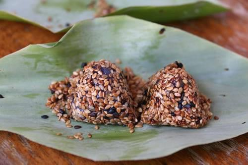

วัตถุดิบ
1.แป้งข้าวเหนียว 5 ถ้วย
2.น้ำดอกมะลิ 2½ ถ้วย
3.น้ำตาลทราย 1½ ถ้วย
4.มะพร้าวขูด 2 ถ้วย
5.งาขาวคั่วให้เหลืองนวล 1½ ถ้วย
6.ใบตองตานี
วิธีทำ
1.ใบตองตานีเช็ดให้สะอาดทั้งสองด้าน เจียนให้กลม เส้นผ่าศูนย์กลางประมาณ 4-5 นิ้ว ลนไฟพออ่อนตัว พับสี่ เตรียมไว้เท่าจำนวนไส้
2.ผสมน้ำตาลทรายกับน้ำดอกมะลิ ½ ถ้วย ใส่กระทะทองตั้งไฟ พอน้ำตาลละลาย กรองด้วยผ้าขาวบางลงกระทะทอง ยกขึ้นตั้งไฟอ่อนๆ เคี่ยวพอน้ำตาลเหนียว ใส่มะพร้าว กวนจนเหนียว ยกลงทิ้งไว้ให้เย็น แล้วปั้นเป็นก้อนกลมเส้นผ่าศูนย์กลางประมาณ ½ นิ้ว ใสภาชนะที่มีฝาปิดสนิท อบด้วยควันเทียนไว้ค้างคืน
3.นวดแป้งกับน้ำดอกมะลิ 2 ถ้วย จนเข้ากันดี นำไปนึ่งไฟแรงจนแป้งสุก ทิ้งไว้ให้เย็น
4.หยิบแป้งที่นึ่งสุกแล้วปั้นเป็นก้อนกลมขนาดพอคำ แผ่แป้งให้แบน ใส่ไส้ลงไปแล้วหุ้มให้มิด คลุกลงในงาขาวคั่ว ห่อด้วยใบตองที่เตรียมไว้เป็นพีระมิดฐานสี่เหลี่ยม